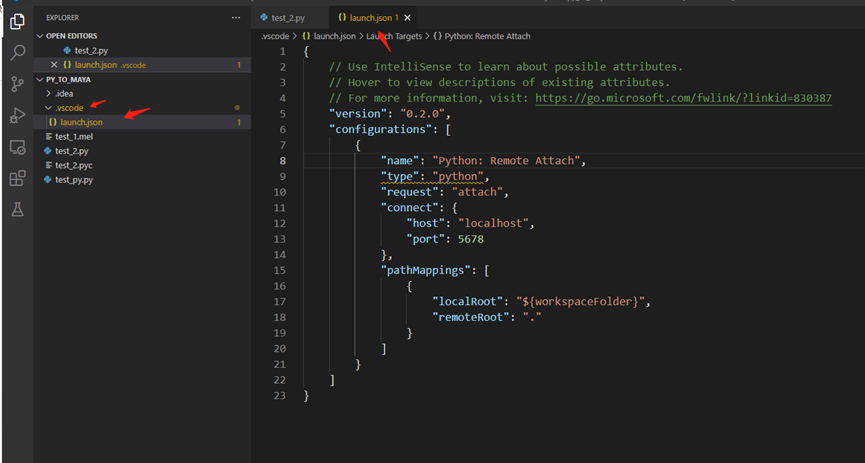

远程到Maya进行Debug调试#
不熟悉Debug调试怎么操作可以先百度或者B站了解一下
Pycharm篇#
必须安装的是专业版的Pycharm，网上有破解方案自行百度
1. 在Pycharm配置远程Debug#
填入Debug配置的名称，按以下标识勾选就可以了，端口Port 任意一个就可以了，只要还未被其他进程使用的端口都可以 配置好之后 点击 Apply 应用就可以了
2. 在Pycharm开启Debug远程#
事先准备好测试的脚本即可 确认好Debug配置文件是远程Debug配置，然后点击甲虫标志的按钮，或者Run -> Debug 或者按debug的快捷键
进入到等待连接Maya的状态
3. 运行连接代码#
打开任意版本的maya，在python窗口执行以下的脚本
import sys
# This should be the path your PyCharm installation
pydevd_egg = r"C:\Program Files\JetBrains\PyCharm 2018.1.4\debug-eggs\pycharm-debug.egg"
if not pydevd_egg in sys.path:
sys.path.append(pydevd_egg)
import pydevd
pydevd.settrace('localhost', port=7020, suspend=False)
egg 路径是 pycharm安装的路径 可以检查一下本地安装的pycharm的安装路径下有debug-eggs文件夹
连接窗口的命令的在配置的时候，就有 直接复制即可
Pycharm连接到了maya的状态，以下就是连接成功的状态
进行脚本的调试 在Pycharm进行断点
在maya内运行测试脚本的启动命令，这时Pycharm就进入了调试的状态，可以运用Pycharm的debug按钮进行代码的调试，这时Maya进入假死的状态（无法点击Maya窗口任何按钮），在pycharm调试的结果也会实时把信息打印在maya的脚本窗口
Maya执行启动脚本的命令 根据测试的脚本 重新编写
存在一个bug，Pycharm如果中断了连接状态，要重新连接maya，maya需要重启再运行脚本才可以重新连接上
VS code篇#
参考网址：
vsc有作者 智伤帝 写的vsc插件也可以实现 具体操作可以看插件说明 以下是手动连接
1. 下载 ptvsd 库#
测试过以下版本是可以的 microsoft/ptvsd 解压提取src的ptvsd库，复制到maya的scripts路径下
2. 配置vsc的Debug文件#
在准备好的测试项目下，点击Run and Debug，弹出的选择配置Remote Attach，全部按默认的按回车键（Enter键），最后打开json文件（不出来可以按上面操作几次），这时就有了项目配置的json文件了

修改端口和其他 按下面修改即可 记得保存json文件
3. 运行连接代码#
在maya打开端口，运行代码窗口会闪一下
import ptvsd
# 默认情况开启 localhost:5678 端口
#ptvsd.enable_attach()
# 可以传入元组来定义 地址和端口号
ptvsd.enable_attach(('localhost',7020))
脚本的端口改为和json设置的端口就可以了 在maya的python窗口运行
4. 在vsc进入连接maya的Debug调试状态#
进入Debug调试状态
进入Debug状态之后，在vsc进行断点
然后可以在maya运行测试脚本的启动命令，这是就进入到了Maya的Debug脚本调试了，和Pycharm一样的情况，vsc的优点就是断开连接之后不用重启maya再连接